Crunchyroll
A UX case study on updating the website and mobile app of a leading Anime streaming platform.
A UX case study on updating the website and mobile app of a leading Anime streaming platform.

UI/UX Designer
Project Date: May 22, 2020 - May 29, 2020
A solo project where I wanted to improve the user experience and overall design of Crunchyroll’s website and app. I conducted research from Crunchyroll users to better understand the platform and pinpoint existing problems and utilized current design trends to make the platform visually engaging.
What is Crunchyroll and Anime?
Crunchyroll is an American video streaming platform that focuses on licensed Japanese Anime and live-action drama. Anime is short for Japanese animation which is known for its 2-D and stylized art style. In addition, Anime is heavily a part of Japanese culture and has a growing international audience each year.
To understand Japanese TV airing cycles, an Anime series will air one weekly episode. For viewers, they watch an episode and simply wait for the next episode to air on the next scheduled day and time. In addition, Anime is organized into seasons which is commonly known as “Seasonal Anime.” For example, if a series is set to air its first episode in October 2020, then the series would be categorized as “Fall 2020.”
One Anime season typically airs twelve to thirteen episodes with at least a year before a sequel is confirmed to air. In some cases, a series will air two combined seasons into one, which is around twenty-five episodes and will run through an estimated two seasons or six months.
With a quick rundown of how Japanese airing cycles work, let’s see how this affects audience demographics. For Japanese audiences, broadcasting stations will announce what day and time an Anime series will air its episodes. However, this gives a disconnection to international audiences since they are restricted to time differences and they do not have access to Japanese broadcasting services. Instead, they have to look into online resources such as MyAnimeList to figure out what days an Anime will air its next episode.
Defining Existing Website and App Problems
Crunchyroll’s website is rather outdated and neglected compared to the app in terms of design and functionality. Mainly the home page since that is the first page a user will land too. My analysis was backed by my own user research and public reviews; claiming that Crunchyroll is known for its “poor interface.”
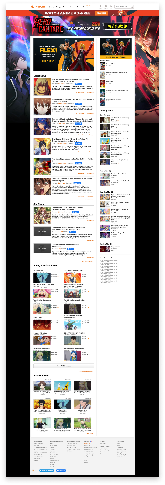


• Non-responsive
• Home page is not visually engaging
• Anime shows are laid out in a long unorganized list that
the user must scroll through to find specific anime.
• Home page tries to fit so much content
with limited space
• Every so often an Anime series is featured in a square card
that looks like an advertisement and it feels out of place.
The main issue with the website and app is that the homepages tries to feature
so much content that it’s not allowing other pages, such as the simulcast
page, to do its job of providing users specific information. The homepages
should feature a limited amount of content since there are pages that are
dedicated to holding all content.
• Redesign and create a responsive website home page.
• Clean up the app's home page and give hierarchy to the shows page.
Defining Crunchyroll's Competitors
• Funimation - Anime video streaming platform
• Netflix - Leading video streaming platform
• Hulu - Leading video streaming platform
• Amazon Prime Video - Video streaming platform
• Illegal Anime streaming platforms
Now Crunchyroll has some competition, especially with big names such as
Netflix and Hulu. While Netflix, Hulu and Prime Video do not focus on
Anime, they all have large Anime libraries that is enough to give users a
wide selection. Not to mention a plethora of illegal streaming sites that
users can go to without paying a subscription.
User Research
I was able to ask three people that have used Crunchyroll regarding
their thoughts of the website and app.
1 out of 3 - said the site looks like a blog and boring
2 out of 3 - said the site looks cluttered and non-functional
3 out of 3 - said they prefer the app over the website
I felt that I needed more user information aside from my interviews.
So I turned to public reviews and looked for comments that referred to
the website and app UX and functionality.
 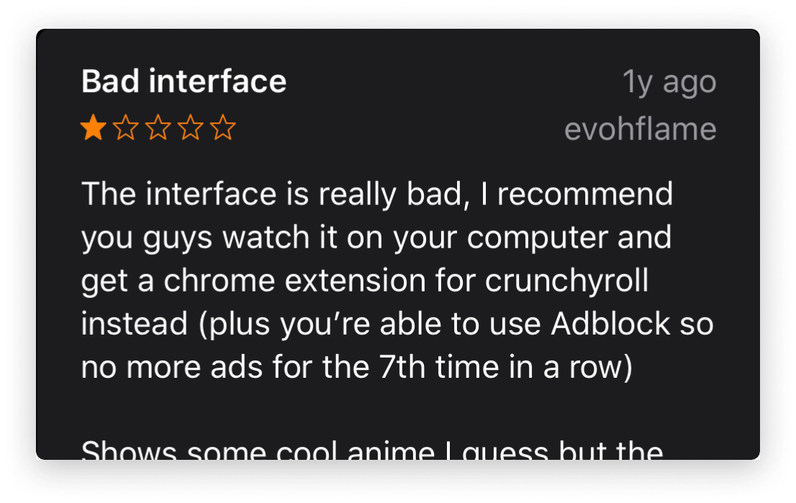
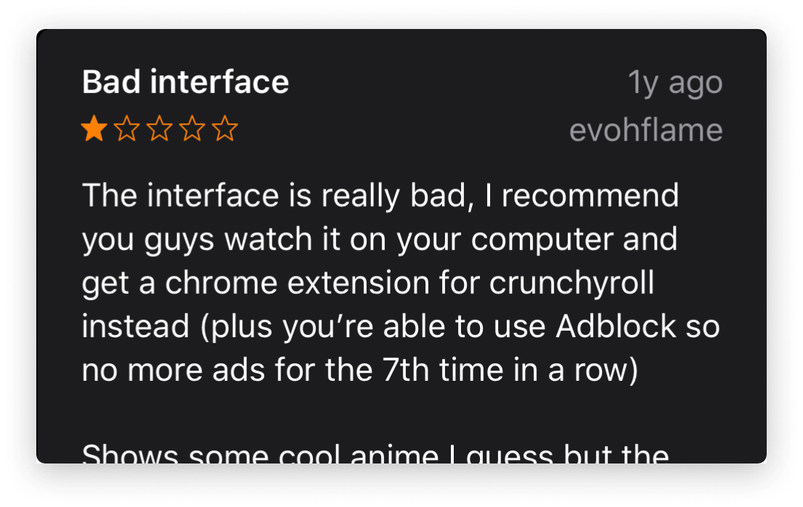
Paper Ideations and Wireframes
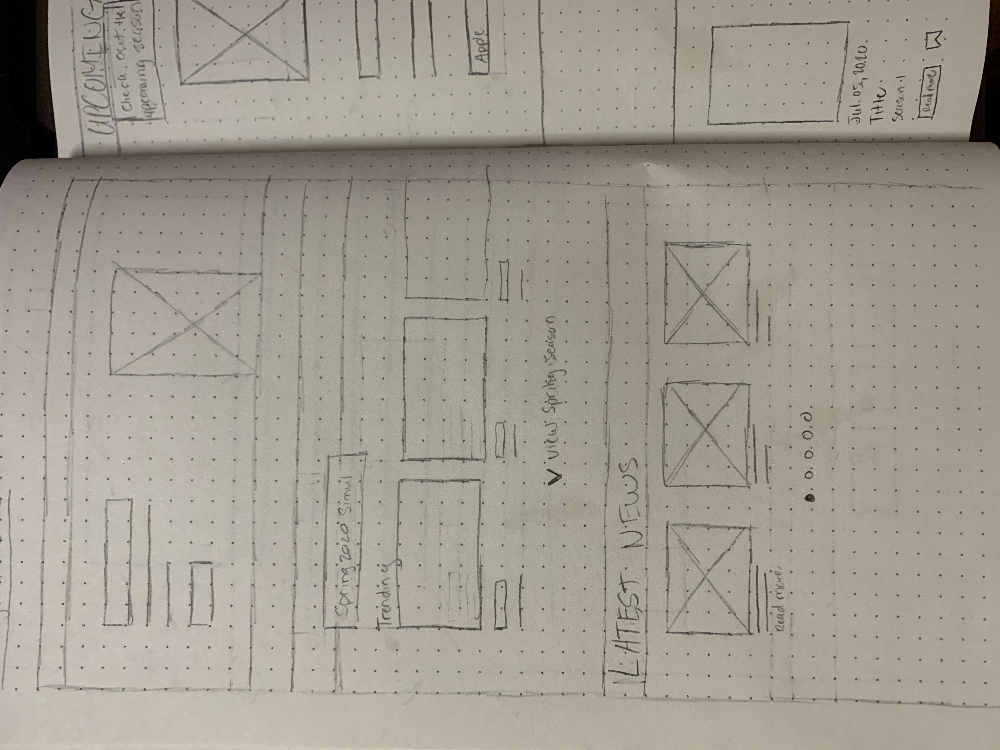 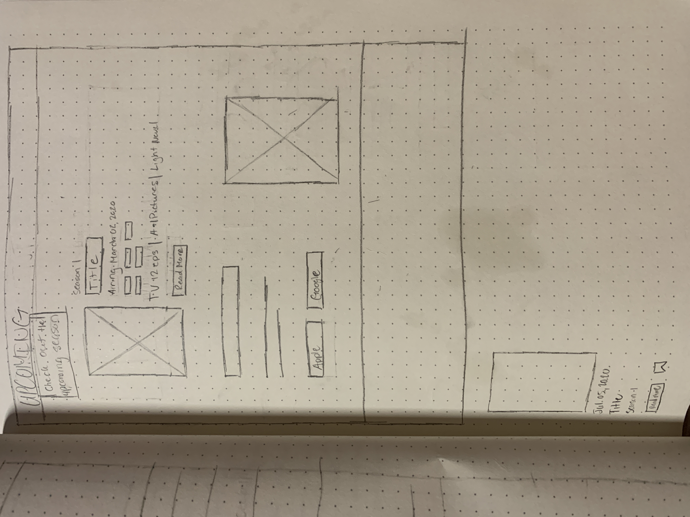 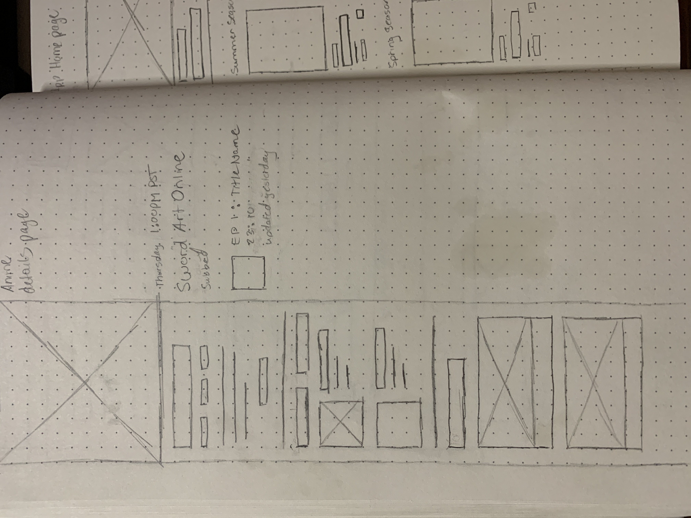 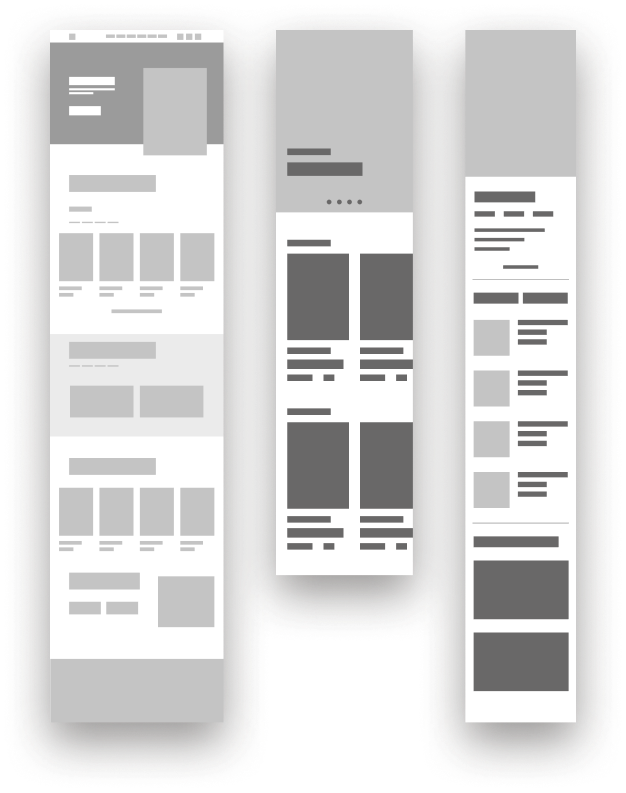
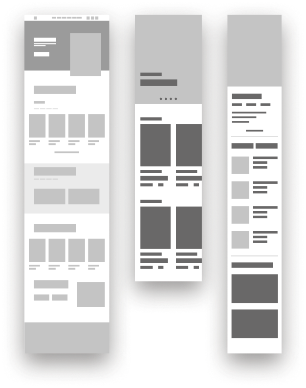
Design Solutions
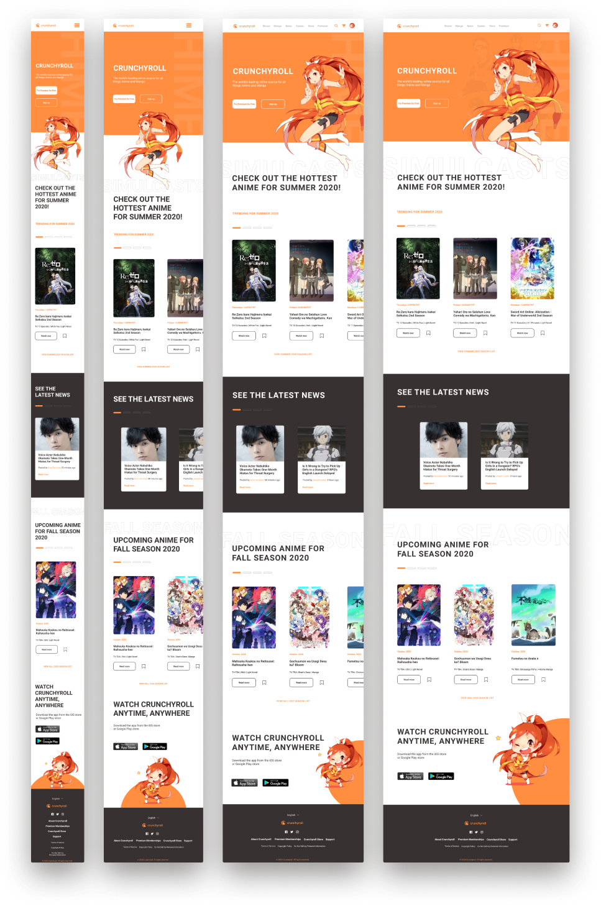 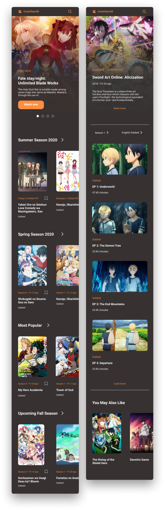Bonus: I find this part of the website redesign super cute
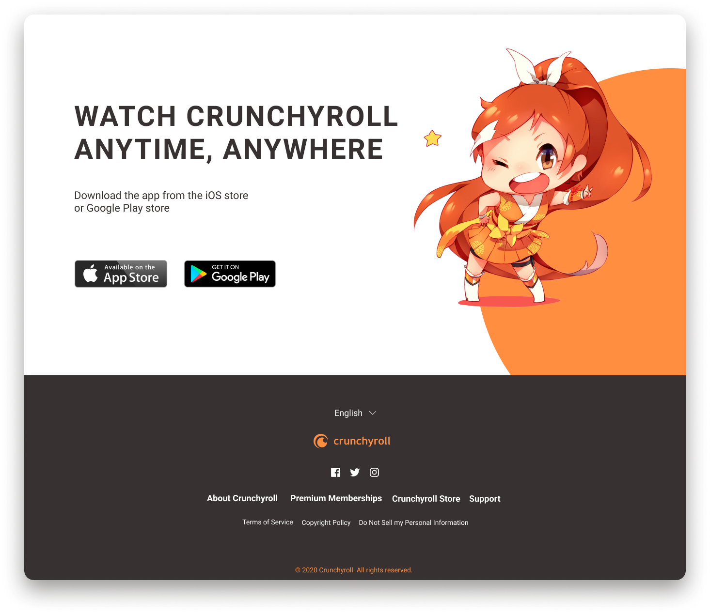Final Thoughts
The redesign was aimed to modernize Crunchyroll’s website through current Typography trends and a cleaner UI. In addition, the current app interface is well thought out, but is trying to fit so much content with little space. To further the design, I added more breathing room and gave hierarchy on the home page and the show’s details page.